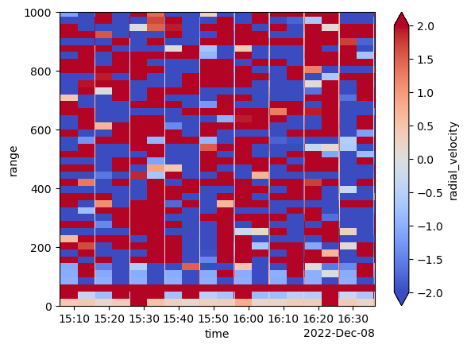
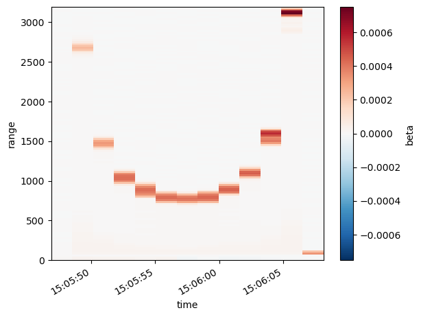
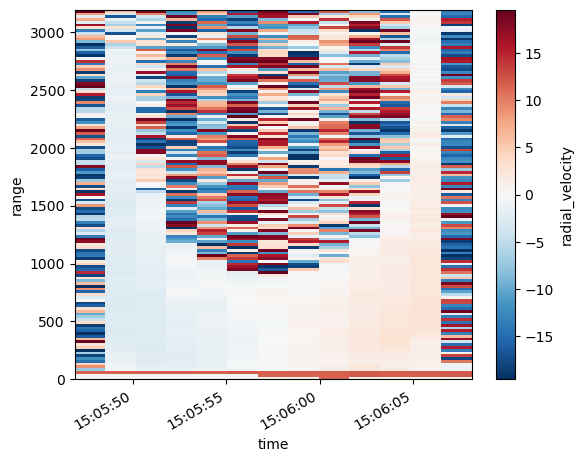
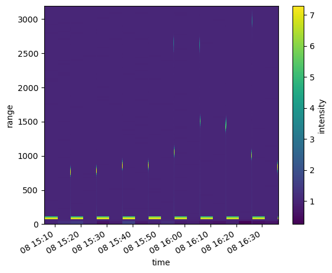
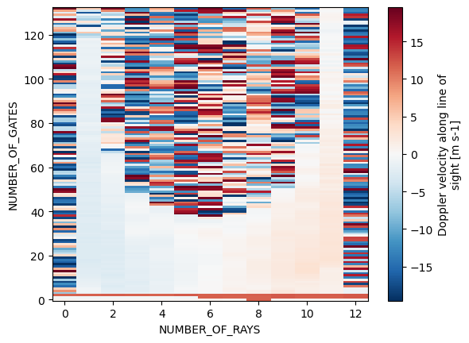

Read Data from the Doppler Lidar#
import glob
import utils
import xarray as xr
import pandas as pd
from datetime import datetime, timedelta
from datetime import datetime
import hvplot.xarray
import holoviews as hv
Compile a list of data files#
files = sorted(glob.glob('../../data/scanning-doppler-lidar/*'))
Create helper functions to read in the data#
def convert_to_hours_minutes_seconds(decimal_hour, initial_time):
delta = timedelta(hours=decimal_hour)
return datetime(initial_time.year, initial_time.month, initial_time.day) + delta
def read_as_netcdf(file):
field_dict = utils.hpl2dict(file)
initial_time = pd.to_datetime(field_dict['start_time'])
time = pd.to_datetime([convert_to_hours_minutes_seconds(x, initial_time) for x in field_dict['decimal_time']])
ds = xr.Dataset(coords={'range':field_dict['center_of_gates'],
'time': time,
'azimuth': ('time', field_dict['azimuth'])},
data_vars={'radial_velocity':(['range', 'time'],
field_dict['radial_velocity']),
'beta': (('range', 'time'),
field_dict['beta']),
'intensity': (('range', 'time'),
field_dict['intensity'])
}
)
return ds
Read in the datasets and merge into a single dataset#
datasets = [read_as_netcdf(file) for file in files]
datasets
[<xarray.Dataset>
Dimensions: (range: 133, time: 13)
Coordinates:
* range (range) float64 12.0 36.0 60.0 ... 3.156e+03 3.18e+03
* time (time) datetime64[ns] 2022-12-08T15:05:47.699988 ... 202...
azimuth (time) float64 0.01 360.0 0.0 0.0 0.0 ... 0.0 0.0 0.0 0.0
Data variables:
radial_velocity (range, time) float64 0.4969 0.2675 0.344 ... 0.3058 -13.49
beta (range, time) float64 7.989e-06 2.779e-05 ... -7.794e-07
intensity (range, time) float64 1.142 1.493 1.455 ... 1.517 0.9974,
<xarray.Dataset>
Dimensions: (range: 133, time: 13)
Coordinates:
* range (range) float64 12.0 36.0 60.0 ... 3.156e+03 3.18e+03
* time (time) datetime64[ns] 2022-12-08T15:15:48.200004 ... 202...
azimuth (time) float64 0.01 360.0 0.0 0.0 0.0 ... 0.0 0.0 0.0 0.0
Data variables:
radial_velocity (range, time) float64 0.4586 0.4586 0.1529 ... 6.039 1.796
beta (range, time) float64 1.506e-05 4.981e-06 ... -5.417e-07
intensity (range, time) float64 1.267 1.088 1.282 ... 1.007 0.9982,
<xarray.Dataset>
Dimensions: (range: 133, time: 13)
Coordinates:
* range (range) float64 12.0 36.0 60.0 ... 3.156e+03 3.18e+03
* time (time) datetime64[ns] 2022-12-08T15:25:48.500004 ... 202...
azimuth (time) float64 0.01 360.0 0.0 0.0 0.0 ... 0.0 0.0 0.0 0.0
Data variables:
radial_velocity (range, time) float64 0.344 0.2293 0.4204 ... -17.85 18.27
beta (range, time) float64 1.551e-06 4.197e-05 ... 6.803e-07
intensity (range, time) float64 1.028 1.745 1.253 ... 1.0 1.002,
<xarray.Dataset>
Dimensions: (range: 133, time: 13)
Coordinates:
* range (range) float64 12.0 36.0 60.0 ... 3.156e+03 3.18e+03
* time (time) datetime64[ns] 2022-12-08T15:35:48.639984 ... 202...
azimuth (time) float64 0.01 0.0 360.0 0.0 0.0 ... 0.0 0.0 0.0 0.0
Data variables:
radial_velocity (range, time) float64 0.5351 0.4204 0.4204 ... 6.345 11.66
beta (range, time) float64 -7.093e-06 7.651e-06 ... 7.924e-07
intensity (range, time) float64 0.874 1.136 1.199 ... 1.006 1.003,
<xarray.Dataset>
Dimensions: (range: 133, time: 13)
Coordinates:
* range (range) float64 12.0 36.0 60.0 ... 3.156e+03 3.18e+03
* time (time) datetime64[ns] 2022-12-08T15:45:48.719988 ... 202...
azimuth (time) float64 0.01 360.0 0.0 0.0 0.0 ... 0.0 0.0 0.0 360.0
Data variables:
radial_velocity (range, time) float64 0.1529 0.344 0.688 ... -9.976 -0.2675
beta (range, time) float64 -1.566e-05 -7.171e-06 ... 2.063e-06
intensity (range, time) float64 0.7219 0.8726 0.9436 ... 1.007 1.007,
<xarray.Dataset>
Dimensions: (range: 133, time: 13)
Coordinates:
* range (range) float64 12.0 36.0 60.0 ... 3.156e+03 3.18e+03
* time (time) datetime64[ns] 2022-12-08T15:55:49.149984 ... 202...
azimuth (time) float64 0.01 360.0 0.0 0.0 0.0 ... 0.0 0.0 0.0 0.0
Data variables:
radial_velocity (range, time) float64 0.344 0.3058 0.4969 ... -1.873 -17.66
beta (range, time) float64 9.181e-06 4.339e-06 ... 3.945e-07
intensity (range, time) float64 1.163 1.077 0.9815 ... 1.008 1.001,
<xarray.Dataset>
Dimensions: (range: 133, time: 13)
Coordinates:
* range (range) float64 12.0 36.0 60.0 ... 3.156e+03 3.18e+03
* time (time) datetime64[ns] 2022-12-08T16:05:49.509996 ... 202...
azimuth (time) float64 0.01 360.0 0.0 0.0 0.0 ... 0.0 0.0 0.0 0.0
Data variables:
radial_velocity (range, time) float64 0.1911 0.4204 0.4969 ... 12.5 -13.42
beta (range, time) float64 -3.186e-06 -1.816e-05 ... -2.121e-06
intensity (range, time) float64 0.9434 0.6776 0.6365 ... 1.007 0.993,
<xarray.Dataset>
Dimensions: (range: 133, time: 13)
Coordinates:
* range (range) float64 12.0 36.0 60.0 ... 3.156e+03 3.18e+03
* time (time) datetime64[ns] 2022-12-08T16:15:49.860000 ... 202...
azimuth (time) float64 0.01 360.0 0.0 0.0 0.0 ... 0.0 0.0 0.0 0.0
Data variables:
radial_velocity (range, time) float64 0.3822 0.5351 0.5351 ... 8.103 -12.69
beta (range, time) float64 -1.784e-05 -1.899e-05 ... 1.075e-06
intensity (range, time) float64 0.6832 0.6628 0.6807 ... 1.008 1.004,
<xarray.Dataset>
Dimensions: (range: 133, time: 13)
Coordinates:
* range (range) float64 12.0 36.0 60.0 ... 3.156e+03 3.18e+03
* time (time) datetime64[ns] 2022-12-08T16:25:50.009988 ... 202...
azimuth (time) float64 0.01 360.0 0.0 0.0 0.0 ... 0.0 0.0 0.0 0.0
Data variables:
radial_velocity (range, time) float64 12.0 0.1911 0.4969 ... -6.65 -7.453
beta (range, time) float64 -4.071e-05 -3.456e-06 ... 4.399e-07
intensity (range, time) float64 0.2771 0.9386 0.6514 ... 1.0 1.001,
<xarray.Dataset>
Dimensions: (range: 133, time: 13)
Coordinates:
* range (range) float64 12.0 36.0 60.0 ... 3.156e+03 3.18e+03
* time (time) datetime64[ns] 2022-12-08T16:35:50.179992 ... 202...
azimuth (time) float64 0.01 360.0 0.0 0.0 0.0 ... 0.0 0.0 0.0 0.0
Data variables:
radial_velocity (range, time) float64 0.2293 0.4586 11.73 ... -19.0 17.77
beta (range, time) float64 -1.748e-05 -1.239e-05 ... 1.562e-06
intensity (range, time) float64 0.6896 0.78 0.3684 ... 0.9996 1.005]
ds = xr.concat(datasets, dim='time')
(ds.radial_velocity.hvplot(clim=(-5, 5), cmap='seismic') + ds.intensity.hvplot(cmap='magma', clim=(0, 4))).cols(1)
WARNING:param.Image00868: Image dimension time is not evenly sampled to relative tolerance of 0.001. Please use the QuadMesh element for irregularly sampled data or set a higher tolerance on hv.config.image_rtol or the rtol parameter in the Image constructor.
WARNING:param.Image00868: Image dimension time is not evenly sampled to relative tolerance of 0.001. Please use the QuadMesh element for irregularly sampled data or set a higher tolerance on hv.config.image_rtol or the rtol parameter in the Image constructor.
WARNING:param.Image00909: Image dimension time is not evenly sampled to relative tolerance of 0.001. Please use the QuadMesh element for irregularly sampled data or set a higher tolerance on hv.config.image_rtol or the rtol parameter in the Image constructor.
WARNING:param.Image00909: Image dimension time is not evenly sampled to relative tolerance of 0.001. Please use the QuadMesh element for irregularly sampled data or set a higher tolerance on hv.config.image_rtol or the rtol parameter in the Image constructor.
---------------------------------------------------------------------------
AttributeError Traceback (most recent call last)
File ~/miniconda3/envs/instrument-cookbooks-dev/lib/python3.10/site-packages/IPython/core/formatters.py:974, in MimeBundleFormatter.__call__(self, obj, include, exclude)
971 method = get_real_method(obj, self.print_method)
973 if method is not None:
--> 974 return method(include=include, exclude=exclude)
975 return None
976 else:
File ~/miniconda3/envs/instrument-cookbooks-dev/lib/python3.10/site-packages/holoviews/core/dimension.py:1286, in Dimensioned._repr_mimebundle_(self, include, exclude)
1279 def _repr_mimebundle_(self, include=None, exclude=None):
1280 """
1281 Resolves the class hierarchy for the class rendering the
1282 object using any display hooks registered on Store.display
1283 hooks. The output of all registered display_hooks is then
1284 combined and returned.
1285 """
-> 1286 return Store.render(self)
File ~/miniconda3/envs/instrument-cookbooks-dev/lib/python3.10/site-packages/holoviews/core/options.py:1428, in Store.render(cls, obj)
1426 data, metadata = {}, {}
1427 for hook in hooks:
-> 1428 ret = hook(obj)
1429 if ret is None:
1430 continue
File ~/miniconda3/envs/instrument-cookbooks-dev/lib/python3.10/site-packages/holoviews/ipython/display_hooks.py:287, in pprint_display(obj)
285 if not ip.display_formatter.formatters['text/plain'].pprint:
286 return None
--> 287 return display(obj, raw_output=True)
File ~/miniconda3/envs/instrument-cookbooks-dev/lib/python3.10/site-packages/holoviews/ipython/display_hooks.py:258, in display(obj, raw_output, **kwargs)
256 elif isinstance(obj, (Layout, NdLayout, AdjointLayout)):
257 with option_state(obj):
--> 258 output = layout_display(obj)
259 elif isinstance(obj, (HoloMap, DynamicMap)):
260 with option_state(obj):
File ~/miniconda3/envs/instrument-cookbooks-dev/lib/python3.10/site-packages/holoviews/ipython/display_hooks.py:149, in display_hook.<locals>.wrapped(element)
147 try:
148 max_frames = OutputSettings.options['max_frames']
--> 149 mimebundle = fn(element, max_frames=max_frames)
150 if mimebundle is None:
151 return {}, {}
File ~/miniconda3/envs/instrument-cookbooks-dev/lib/python3.10/site-packages/holoviews/ipython/display_hooks.py:223, in layout_display(layout, max_frames)
220 max_frame_warning(max_frames)
221 return None
--> 223 return render(layout)
File ~/miniconda3/envs/instrument-cookbooks-dev/lib/python3.10/site-packages/holoviews/ipython/display_hooks.py:76, in render(obj, **kwargs)
73 if renderer.fig == 'pdf':
74 renderer = renderer.instance(fig='png')
---> 76 return renderer.components(obj, **kwargs)
File ~/miniconda3/envs/instrument-cookbooks-dev/lib/python3.10/site-packages/holoviews/plotting/renderer.py:396, in Renderer.components(self, obj, fmt, comm, **kwargs)
393 embed = (not (dynamic or streams or self.widget_mode == 'live') or config.embed)
395 if embed or config.comms == 'default':
--> 396 return self._render_panel(plot, embed, comm)
397 return self._render_ipywidget(plot)
File ~/miniconda3/envs/instrument-cookbooks-dev/lib/python3.10/site-packages/holoviews/plotting/renderer.py:403, in Renderer._render_panel(self, plot, embed, comm)
401 doc = Document()
402 with config.set(embed=embed):
--> 403 model = plot.layout._render_model(doc, comm)
404 if embed:
405 return render_model(model, comm)
File ~/miniconda3/envs/instrument-cookbooks-dev/lib/python3.10/site-packages/panel/viewable.py:748, in Viewable._render_model(self, doc, comm)
746 if comm is None:
747 comm = state._comm_manager.get_server_comm()
--> 748 model = self.get_root(doc, comm)
750 if self._design and self._design.theme.bokeh_theme:
751 doc.theme = self._design.theme.bokeh_theme
File ~/miniconda3/envs/instrument-cookbooks-dev/lib/python3.10/site-packages/panel/layout/base.py:311, in Panel.get_root(self, doc, comm, preprocess)
307 def get_root(
308 self, doc: Optional[Document] = None, comm: Optional[Comm] = None,
309 preprocess: bool = True
310 ) -> Model:
--> 311 root = super().get_root(doc, comm, preprocess)
312 # ALERT: Find a better way to handle this
313 if hasattr(root, 'styles') and 'overflow-x' in root.styles:
File ~/miniconda3/envs/instrument-cookbooks-dev/lib/python3.10/site-packages/panel/viewable.py:666, in Renderable.get_root(self, doc, comm, preprocess)
664 wrapper = self._design._wrapper(self)
665 if wrapper is self:
--> 666 root = self._get_model(doc, comm=comm)
667 if preprocess:
668 self._preprocess(root)
File ~/miniconda3/envs/instrument-cookbooks-dev/lib/python3.10/site-packages/panel/layout/base.py:177, in Panel._get_model(self, doc, root, parent, comm)
175 root = root or model
176 self._models[root.ref['id']] = (model, parent)
--> 177 objects, _ = self._get_objects(model, [], doc, root, comm)
178 props = self._get_properties(doc)
179 props[self._property_mapping['objects']] = objects
File ~/miniconda3/envs/instrument-cookbooks-dev/lib/python3.10/site-packages/panel/layout/base.py:159, in Panel._get_objects(self, model, old_objects, doc, root, comm)
157 else:
158 try:
--> 159 child = pane._get_model(doc, root, model, comm)
160 except RerenderError as e:
161 if e.layout is not None and e.layout is not self:
File ~/miniconda3/envs/instrument-cookbooks-dev/lib/python3.10/site-packages/panel/pane/holoviews.py:423, in HoloViews._get_model(self, doc, root, parent, comm)
421 plot = self.object
422 else:
--> 423 plot = self._render(doc, comm, root)
425 plot.pane = self
426 backend = plot.renderer.backend
File ~/miniconda3/envs/instrument-cookbooks-dev/lib/python3.10/site-packages/panel/pane/holoviews.py:518, in HoloViews._render(self, doc, comm, root)
515 if comm:
516 kwargs['comm'] = comm
--> 518 return renderer.get_plot(self.object, **kwargs)
File ~/miniconda3/envs/instrument-cookbooks-dev/lib/python3.10/site-packages/holoviews/plotting/bokeh/renderer.py:68, in BokehRenderer.get_plot(self_or_cls, obj, doc, renderer, **kwargs)
61 @bothmethod
62 def get_plot(self_or_cls, obj, doc=None, renderer=None, **kwargs):
63 """
64 Given a HoloViews Viewable return a corresponding plot instance.
65 Allows supplying a document attach the plot to, useful when
66 combining the bokeh model with another plot.
67 """
---> 68 plot = super().get_plot(obj, doc, renderer, **kwargs)
69 if plot.document is None:
70 plot.document = Document() if self_or_cls.notebook_context else curdoc()
File ~/miniconda3/envs/instrument-cookbooks-dev/lib/python3.10/site-packages/holoviews/plotting/renderer.py:240, in Renderer.get_plot(self_or_cls, obj, doc, renderer, comm, **kwargs)
237 defaults = [kd.default for kd in plot.dimensions]
238 init_key = tuple(v if d is None else d for v, d in
239 zip(plot.keys[0], defaults))
--> 240 plot.update(init_key)
241 else:
242 plot = obj
File ~/miniconda3/envs/instrument-cookbooks-dev/lib/python3.10/site-packages/holoviews/plotting/plot.py:955, in DimensionedPlot.update(self, key)
953 def update(self, key):
954 if len(self) == 1 and key in (0, self.keys[0]) and not self.drawn:
--> 955 return self.initialize_plot()
956 item = self.__getitem__(key)
957 self.traverse(lambda x: setattr(x, '_updated', True))
File ~/miniconda3/envs/instrument-cookbooks-dev/lib/python3.10/site-packages/holoviews/plotting/bokeh/plot.py:945, in LayoutPlot.initialize_plot(self, plots, ranges)
942 continue
944 shared_plots = list(passed_plots) if self.shared_axes else None
--> 945 subplots = subplot.initialize_plot(ranges=ranges, plots=shared_plots)
946 nsubplots = len(subplots)
948 modes = {sp.sizing_mode for sp in subplots
949 if sp.sizing_mode not in (None, 'auto', 'fixed')}
File ~/miniconda3/envs/instrument-cookbooks-dev/lib/python3.10/site-packages/holoviews/plotting/bokeh/plot.py:1094, in AdjointLayoutPlot.initialize_plot(self, ranges, plots)
1092 else:
1093 passed_plots = plots + adjoined_plots
-> 1094 adjoined_plots.append(subplot.initialize_plot(ranges=ranges, plots=passed_plots))
1095 self.drawn = True
1096 if not adjoined_plots: adjoined_plots = [None]
File ~/miniconda3/envs/instrument-cookbooks-dev/lib/python3.10/site-packages/holoviews/plotting/bokeh/element.py:1888, in ElementPlot.initialize_plot(self, ranges, plot, plots, source)
1886 if self.autorange:
1887 self._setup_autorange()
-> 1888 self._init_glyphs(plot, element, ranges, source)
1889 if not self.overlaid:
1890 self._update_plot(key, plot, style_element)
File ~/miniconda3/envs/instrument-cookbooks-dev/lib/python3.10/site-packages/holoviews/plotting/bokeh/element.py:1829, in ElementPlot._init_glyphs(self, plot, element, ranges, source)
1826 if isinstance(renderer, Renderer):
1827 self.handles['glyph_renderer'] = renderer
-> 1829 self._postprocess_hover(renderer, source)
1831 # Update plot, source and glyph
1832 with abbreviated_exception():
File ~/miniconda3/envs/instrument-cookbooks-dev/lib/python3.10/site-packages/holoviews/plotting/bokeh/raster.py:85, in RasterPlot._postprocess_hover(self, renderer, source)
76 datetime_code = """
77 if (value === -9223372036854776) {
78 return "NaN"
(...)
82 }
83 """
84 for key in formatters:
---> 85 if formatters[key].lower() == "datetime":
86 formatters[key] = CustomJSHover(code=datetime_code)
88 hover.tooltips = tooltips
File ~/miniconda3/envs/instrument-cookbooks-dev/lib/python3.10/site-packages/bokeh/core/has_props.py:367, in HasProps.__getattr__(self, name)
364 if isinstance(descriptor, property): # Python property
365 return super().__getattribute__(name)
--> 367 self._raise_attribute_error_with_matches(name, properties)
File ~/miniconda3/envs/instrument-cookbooks-dev/lib/python3.10/site-packages/bokeh/core/has_props.py:375, in HasProps._raise_attribute_error_with_matches(self, name, properties)
372 if not matches:
373 matches, text = sorted(properties), "possible"
--> 375 raise AttributeError(f"unexpected attribute {name!r} to {self.__class__.__name__}, {text} attributes are {nice_join(matches)}")
AttributeError: unexpected attribute 'lower' to CustomJSHover, possible attributes are args, code, js_event_callbacks, js_property_callbacks, name, subscribed_events, syncable or tags
:Layout
.Image.I :Image [time,range] (radial_velocity)
.Image.II :Image [time,range] (intensity)
ds.beta.max()
<xarray.DataArray 'beta' ()> array(0.00075305)
ds.radial_velocity.plot(ylim=(0, 1000), vmin=-2, vmax=2, cmap='coolwarm')
<matplotlib.collections.QuadMesh at 0x7f1f90840a00>

def convert_to_hours_minutes_seconds(decimal_hour, initial_time=initial_time):
delta = timedelta(hours=decimal_hour)
return datetime(initial_time.year, initial_time.month, initial_time.day) + delta
---------------------------------------------------------------------------
NameError Traceback (most recent call last)
Cell In[10], line 1
----> 1 def convert_to_hours_minutes_seconds(decimal_hour, initial_time=initial_time):
2 delta = timedelta(hours=decimal_hour)
3 return datetime(initial_time.year, initial_time.month, initial_time.day) + delta
NameError: name 'initial_time' is not defined
from datetime import timedelta
initial_time + timedelta(hours=72.345)
Timestamp('2022-12-11 15:26:30.230000')
pd.to_datetime("%d:%02d.%02.6f" % (hours, minutes, seconds))
---------------------------------------------------------------------------
NameError Traceback (most recent call last)
Cell In[170], line 1
----> 1 pd.to_datetime("%d:%02d.%02.6f" % (hours, minutes, seconds))
NameError: name 'hours' is not defined
"%02.6f" % 7.329996000000392
'7.329996'
pd.to_datetime(['2022-12-08 15:05.47'])
DatetimeIndex(['2022-12-08 15:05:28'], dtype='datetime64[ns]', freq=None)
time
DatetimeIndex(['2022-12-08 15:05:47.699988', '2022-12-08 15:05:49.340004',
'2022-12-08 15:05:50.970012', '2022-12-08 15:05:52.609992',
'2022-12-08 15:05:54.250008', '2022-12-08 15:05:55.880016',
'2022-12-08 15:05:57.519996', '2022-12-08 15:05:59.150004',
'2022-12-08 15:06:00.780012', '2022-12-08 15:06:02.419992',
'2022-12-08 15:06:04.060008', '2022-12-08 15:06:05.690016',
'2022-12-08 15:06:07.329996'],
dtype='datetime64[ns]', freq=None)
field_dict['spectral_width'].shape
(133, 13)
field_dict['center_of_gates'].shape
(133,)
field_dict
{'filename': 'RHI_240_20221208_150544.hpl',
'system_id': 240,
'number_of_gates': 133,
'range_gate_length_m': 24.0,
'gate_length_pts': 8,
'pulses_per_ray': 5000,
'number_of_waypoints_in_file': 13,
'no_of_rays_in_file': 13,
'scan_type': 'RHI',
'focus_range': '65535',
'start_time': '20221208 15:05:48.23',
'resolution': '0.0382 m s-1',
'range_gates': array([ 0, 1, 2, 3, 4, 5, 6, 7, 8, 9, 10, 11, 12,
13, 14, 15, 16, 17, 18, 19, 20, 21, 22, 23, 24, 25,
26, 27, 28, 29, 30, 31, 32, 33, 34, 35, 36, 37, 38,
39, 40, 41, 42, 43, 44, 45, 46, 47, 48, 49, 50, 51,
52, 53, 54, 55, 56, 57, 58, 59, 60, 61, 62, 63, 64,
65, 66, 67, 68, 69, 70, 71, 72, 73, 74, 75, 76, 77,
78, 79, 80, 81, 82, 83, 84, 85, 86, 87, 88, 89, 90,
91, 92, 93, 94, 95, 96, 97, 98, 99, 100, 101, 102, 103,
104, 105, 106, 107, 108, 109, 110, 111, 112, 113, 114, 115, 116,
117, 118, 119, 120, 121, 122, 123, 124, 125, 126, 127, 128, 129,
130, 131, 132]),
'center_of_gates': array([ 12., 36., 60., 84., 108., 132., 156., 180., 204.,
228., 252., 276., 300., 324., 348., 372., 396., 420.,
444., 468., 492., 516., 540., 564., 588., 612., 636.,
660., 684., 708., 732., 756., 780., 804., 828., 852.,
876., 900., 924., 948., 972., 996., 1020., 1044., 1068.,
1092., 1116., 1140., 1164., 1188., 1212., 1236., 1260., 1284.,
1308., 1332., 1356., 1380., 1404., 1428., 1452., 1476., 1500.,
1524., 1548., 1572., 1596., 1620., 1644., 1668., 1692., 1716.,
1740., 1764., 1788., 1812., 1836., 1860., 1884., 1908., 1932.,
1956., 1980., 2004., 2028., 2052., 2076., 2100., 2124., 2148.,
2172., 2196., 2220., 2244., 2268., 2292., 2316., 2340., 2364.,
2388., 2412., 2436., 2460., 2484., 2508., 2532., 2556., 2580.,
2604., 2628., 2652., 2676., 2700., 2724., 2748., 2772., 2796.,
2820., 2844., 2868., 2892., 2916., 2940., 2964., 2988., 3012.,
3036., 3060., 3084., 3108., 3132., 3156., 3180.]),
'radial_velocity': array([[ 0.4969, 0.2675, 0.344 , ..., 0.5351, 0.4204, 0.4204],
[ -0.344 , -0.688 , -0.5733, ..., 11.7337, 11.7719, 11.963 ],
[ 11.619 , 11.6955, 11.8483, ..., 11.8101, 11.8483, 12.0394],
...,
[ -1.9875, -16.5877, -3.7074, ..., -14.7913, 0.2675, -15.4028],
[ 7.7205, -3.2487, 9.5551, ..., -2.943 , -0.1147, -12.8038],
[ 19.1867, 4.854 , 18.6133, ..., -14.7913, 0.3058, -13.4918]]),
'intensity': array([[1.141879, 1.49347 , 1.455399, ..., 0.844797, 0.954667, 1.001475],
[1.105347, 1.463778, 1.39274 , ..., 0.849536, 0.942302, 0.979837],
[1.021476, 1.082985, 1.061974, ..., 0.97966 , 0.985956, 1.004995],
...,
[1.002233, 0.999644, 0.998573, ..., 1.010497, 3.379957, 0.999662],
[0.99991 , 0.99865 , 0.988375, ..., 1.000328, 2.219137, 0.999468],
[1.000787, 0.999883, 0.998965, ..., 0.997938, 1.517312, 0.997432]]),
'beta': array([[ 7.989228e-06, 2.778736e-05, 2.564359e-05, ..., -8.739524e-06,
-2.552723e-06, 8.307399e-08],
[ 5.938080e-06, 2.614180e-05, 2.213759e-05, ..., -8.481209e-06,
-3.252267e-06, -1.136548e-06],
[ 1.212306e-06, 4.684448e-06, 3.498434e-06, ..., -1.148210e-06,
-7.927657e-07, 2.819446e-07],
...,
[ 6.606759e-07, -1.053746e-07, -4.222111e-07, ..., 3.105908e-06,
7.041767e-04, -9.987265e-08],
[-2.707911e-08, -4.045048e-07, -3.483673e-06, ..., 9.819745e-08,
3.653321e-04, -1.592993e-07],
[ 2.389713e-07, -3.556643e-08, -3.139982e-07, ..., -6.258545e-07,
1.569954e-04, -7.794487e-07]]),
'spectral_width': array([[nan, nan, nan, ..., nan, nan, nan],
[nan, nan, nan, ..., nan, nan, nan],
[nan, nan, nan, ..., nan, nan, nan],
...,
[nan, nan, nan, ..., nan, nan, nan],
[nan, nan, nan, ..., nan, nan, nan],
[nan, nan, nan, ..., nan, nan, nan]]),
'elevation': array([ -0. , 15.04, 30.03, 45.03, 60.03, 75.03, 90.03, 105.03,
120.03, 135.03, 150.04, 165.03, 180.03]),
'azimuth': array([1.0e-02, 3.6e+02, 0.0e+00, 0.0e+00, 0.0e+00, 0.0e+00, 0.0e+00,
3.6e+02, 0.0e+00, 0.0e+00, 0.0e+00, 0.0e+00, 0.0e+00]),
'decimal_time': array([15.09658333, 15.09703889, 15.09749167, 15.09794722, 15.09840278,
15.09885556, 15.09931111, 15.09976389, 15.10021667, 15.10067222,
15.10112778, 15.10158056, 15.10203611]),
'pitch': array([0.45, 0.45, 0.45, 0.45, 0.34, 0.34, 0.34, 0.34, 0.34, 0.45, 0.45,
0.34, 0.45]),
'roll': array([-0.65, -0.65, -0.65, -0.65, -0.65, -0.65, -0.65, -0.65, -0.65,
-0.65, -0.75, -0.65, -0.65])}
ds.beta.plot(x='time');

ds.radial_velocity.plot(x='time');

ds.intensity.plot()
<matplotlib.collections.QuadMesh at 0x151e8b8e0>

xr.Dataset(field_dict)
---------------------------------------------------------------------------
MissingDimensionsError Traceback (most recent call last)
Cell In[25], line 1
----> 1 xr.Dataset(field_dict)
File ~/miniforge3/envs/instrument-cookbooks-dev/lib/python3.9/site-packages/xarray/core/dataset.py:605, in Dataset.__init__(self, data_vars, coords, attrs)
602 if isinstance(coords, Dataset):
603 coords = coords.variables
--> 605 variables, coord_names, dims, indexes, _ = merge_data_and_coords(
606 data_vars, coords, compat="broadcast_equals"
607 )
609 self._attrs = dict(attrs) if attrs is not None else None
610 self._close = None
File ~/miniforge3/envs/instrument-cookbooks-dev/lib/python3.9/site-packages/xarray/core/merge.py:575, in merge_data_and_coords(data_vars, coords, compat, join)
573 objects = [data_vars, coords]
574 explicit_coords = coords.keys()
--> 575 return merge_core(
576 objects,
577 compat,
578 join,
579 explicit_coords=explicit_coords,
580 indexes=Indexes(indexes, coords),
581 )
File ~/miniforge3/envs/instrument-cookbooks-dev/lib/python3.9/site-packages/xarray/core/merge.py:755, in merge_core(objects, compat, join, combine_attrs, priority_arg, explicit_coords, indexes, fill_value)
751 coerced = coerce_pandas_values(objects)
752 aligned = deep_align(
753 coerced, join=join, copy=False, indexes=indexes, fill_value=fill_value
754 )
--> 755 collected = collect_variables_and_indexes(aligned, indexes=indexes)
756 prioritized = _get_priority_vars_and_indexes(aligned, priority_arg, compat=compat)
757 variables, out_indexes = merge_collected(
758 collected, prioritized, compat=compat, combine_attrs=combine_attrs
759 )
File ~/miniforge3/envs/instrument-cookbooks-dev/lib/python3.9/site-packages/xarray/core/merge.py:365, in collect_variables_and_indexes(list_of_mappings, indexes)
362 indexes_.pop(name, None)
363 append_all(coords_, indexes_)
--> 365 variable = as_variable(variable, name=name)
366 if name in indexes:
367 append(name, variable, indexes[name])
File ~/miniforge3/envs/instrument-cookbooks-dev/lib/python3.9/site-packages/xarray/core/variable.py:148, in as_variable(obj, name)
146 data = as_compatible_data(obj)
147 if data.ndim != 1:
--> 148 raise MissingDimensionsError(
149 f"cannot set variable {name!r} with {data.ndim!r}-dimensional data "
150 "without explicit dimension names. Pass a tuple of "
151 "(dims, data) instead."
152 )
153 obj = Variable(name, data, fastpath=True)
154 else:
MissingDimensionsError: cannot set variable 'radial_velocity' with 2-dimensional data without explicit dimension names. Pass a tuple of (dims, data) instead.
utils.hpl_to_netcdf(files[0], 'sample_file.nc')
sample_file.nc/2022/202212/20221208/RHI_240_20221208_150544_l0.nc is created succesfully
import xarray as xr
ds = xr.open_dataset('sample_file.nc/2022/202212/20221208/RHI_240_20221208_150544_l0.nc')
ds = ds.set_coords('decimal_time')
ds.radial_velocity.plot()
<matplotlib.collections.QuadMesh at 0x16cc4e490>

ds.decimal_time.values
array([15.09658333, 15.09703889, 15.09749167, 15.09794722, 15.09840278,
15.09885556, 15.09931111, 15.09976389, 15.10021667, 15.10067222,
15.10112778, 15.10158056, 15.10203611])